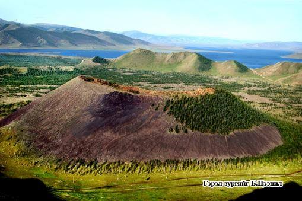
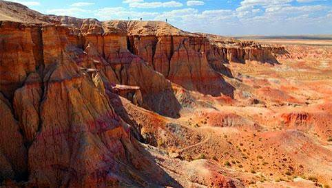
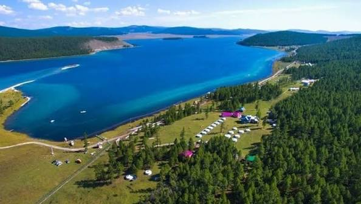

Зургийн цомог
Харанхуй горим
Монголын үзэсгэлэнт газарууд
Карт дээр хулганаа аваачих эсвэл дарж зургийн мэдээллийг хар.

Газрын нэр 1
Газар: Хоргын тогоо
Газрын нэр 2
Газар: Сайхны хөтөл
Газрын нэр 3
Газар: Их газрын чулуу

Газрын нэр 4
Газар: Цагаан суварга
Газрын нэр 5
Газар: Цонжин болдог

Газрын нэр 6
Газар: Хөвсгөл нуур
Таны хөтөч видеог дэмжихгүй байна.
Богино танилцуулга видео (хадмалтай)
Зургууд авсан газрын зураг